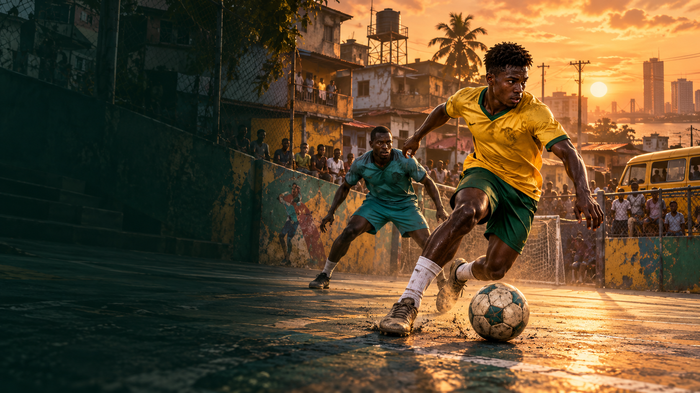
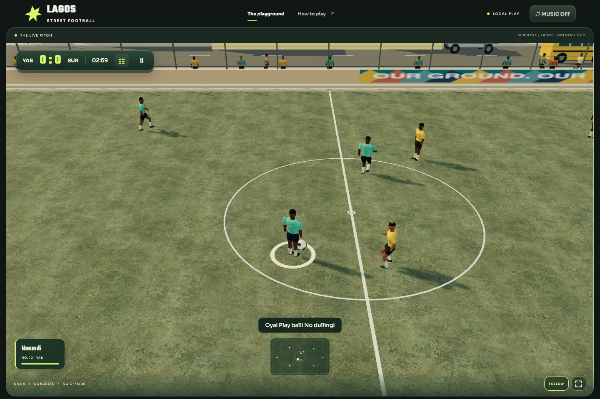

One world. Closer to the action.
Live-renderer comparison, 6 October 2026. The six gameplay drills are reproducible staged scenarios running the actual match renderer, simulation and animations. The hero image is a visual target, not a claim of achieved fidelity.

Visual target supplied by the user
Before this visual passCurrent live gameplay
Critical comparison
Closer framing, longer shadows, a layered street backdrop, revised player anatomy and material response improve readability and atmosphere. Faces, garment deformation, animation quality and architecture still fall well short of the reference. This remains stylized procedural 3D, not photorealism.